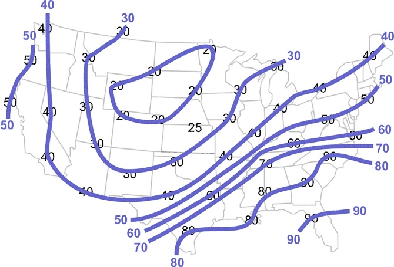
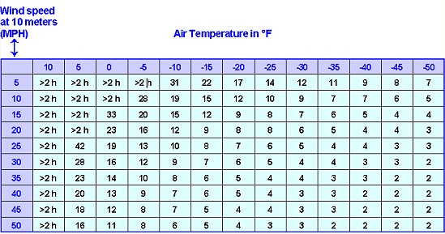

How can we use functions of multiple variables to model meteorological quantities?
How can multivariable functions be represented algebraically, numerically, and graphically?
Many relationships you have studied in the past involved two variables - an independent variable (such as \(x\)) and a dependent variable (often \(y\)). In fact, most of your study of calculus involved the study of relationships \(y=f(x)\text{.}\) For example, the percentage of damage \(P\) to a crop after a storm can be thought of as a function of maximum wind speed \(w\) (in mph) during that storm. That is, \(P=f(w)\text{.}\) However, often additional variables have an impact on an outcome. The damage to a crop after a storm is also impacted by the age \(a\) of the crop (in days), for example. To represent this situation, where the percent damage \(P\) depends on wind speed \(w\) and age of crop \(a\text{,}\) we write \(P=f(w,a)\text{.}\) In this section, we study functions of more than one variable.
Example3.1.1.Wind Chill Index.
The wind chill index depends upon the the wind speed \(v\) and the air temperature \(T\text{.}\) That is, \(W=f(v,T)\text{.}\)
Example3.1.2.Hot-Dry-Windy Index.
The Hot-Dry-Windy index (HDW) depends on the maximum wind speed \(U\) and maximum vapor pressure deficit \(VPD\) in the lowest 50 millibars of the atmosphere. That is, \(HDW=g(U,VPD)\text{.}\)
Example3.1.3.Describing the Atmosphere.
There are seven basic variables that describe the state \(S\) of the atmosphere:
\(T\) (temperature)
\(\rho\) (pressure)
\(\phi\) (geopotential)
\(q\) (humidity/moisture)
\(u\) (\(x\)-component of wind)
\(v\) (\(y\)-component of wind)
\(w\) (\(z\)-component of wind)
That is, \(S = h(T,\rho, \phi, q, u, v, w)\text{.}\)
Checkpoint3.1.4.Isotherms.
The weather map in Figure 3.1.5 (a contour diagram) displays the predicted high temperature, \(T\text{,}\) in degrees Fahrenheit throughout the United States on a particular day. Clearly, \(T\) is a function of latitude \(y\) and longitude \(x\text{.}\) The curves, on which the high temperature \(T\) is constant, are called isotherms.

Figure3.1.5.A weather map of the United States (Source: weather.gov 30 
weather.gov
).
Estimate the predicted high temperature \(T\) in each given city.
New Orleans, LA
Chicago, IL
Buffalo, NY
St. Cloud, MN (\(45.5^{\circ} N, 94.2^{\circ} W\))
Answer.
New Orleans, LA: approximately \(80^{\circ}F\)
Chicago, IL: approximately \(35^{\circ}F\)
Buffalo, NY: approximately \(40^{\circ}F\)
St. Cloud, MN: approximately \(22^{\circ}F\)
Checkpoint3.1.6.Wind Chill.
Wind chill is a temperature which tells you how cold it feels as a result of the combination of wind and temperature. Let \(C = f(w,T)\) where \(C\) is the wind chill temperature (in degrees Fahrenheit) that is associated with a wind speed of \(w\) miles per hour and a temperature of \(T\) degrees Fahrenheit. Values for the function \(f\) are given in Table 3.1.7.
Table3.1.7.Table of wind chill values.
\(w \ \backslash \ T\)
\(35\)
\(30\)
\(25\)
\(20\)
\(15\)
\(10\)
\(5\)
\(0\)
\(5\)
\(31\)
\(25\)
\(19\)
\(13\)
\(7\)
\(1\)
\(-5\)
\(-11\)
\(10\)
\(27\)
\(21\)
\(15\)
\(9\)
\(3\)
\(-4\)
\(-10\)
\(-16\)
\(15\)
\(25\)
\(19\)
\(13\)
\(6\)
\(0\)
\(-7\)
\(-13\)
\(-19\)
\(20\)
\(24\)
\(17\)
\(11\)
\(4\)
\(-2\)
\(-9\)
\(-15\)
\(-22\)
\(25\)
\(23\)
\(16\)
\(9\)
\(3\)
\(-4\)
\(-11\)
\(-17\)
\(-24\)
Evaluate and interpret \(f(20,5)\text{.}\)
How fast does the wind need to blow for it to feel like \(-10^{\circ}F\) when the air temperature is really \(5^{\circ}F\text{?}\)
If \(w\) is held constant, is the single variable function you get increasing, decreasing, or neither?
If \(T\) is held constant, is the single variable function you get increasing, decreasing, or neither?
Answer.
\(f(20,5) = -15^{\circ}F\text{;}\) When the wind speed is 20 mph and the temperature is \(5^{\circ}F\text{,}\) the windchill (or feels like temperature) is \(-15^{\circ}F\text{.}\)
10 mph
increasing
decreasing
In Checkpoint 3.1.4 and Checkpoint 3.1.6, we used a contour diagram and a numeric table to represent the respective functions \(T = f(x,y)\) and \(C=f(w,T)\text{.}\) We did this since there was no obvious algebraic formula for these underlying functions. The same is true in Checkpoint 3.1.8.
Checkpoint3.1.8.Snowfall.
Consider \(S = g(d, T)\) where \(S\) represents newly fallen snowfall (in inches) as a function of the melt water depth \(d\) (in inches) and temperature \(T\) (in \(^\circ F\)). Figure3.1.9.Newly fallen snowfall (in inches) as a function of melt water depth \(d\) (in inches) and temperature \(T\) (in \(^\circ F\)). (Source: www.SIMA.org 31 
If it is known that 10 inches of snowfall occurred, can the melt water depth \(d\) be uniquely determined? If so, what is this value? If not, explain why not.
If \(d\) is held constant, is the single variable function that results increasing, decreasing, or neither?
Answer.
20 inches (of snowfall)
The value of \(d\) cannot be determined. More than one combination of melt water depth \(d\) and temperature \(T\) could have produced this snowfall. For example, \(g(1,30)=g(0.5,17)=g(0.25,5)=10\text{.}\)
For a given melt water depth \(d\text{,}\) as the temperature \(T\) increases, the resulting snowfall decreases.
Some quantities we encounter can be modeled with a formula. However, as this next example demonstrates, representing functions of several variables in multiple ways carries huge advantages.
Example3.1.10.Heat Index.
On hot days, you feel warmer than the actual air temperature when the air is more humid, but you feel cooler when the air is drier due to evaporation of your perspiration. Steadman’s temperature-humidity index of sultriness (i.e. heat index is given by
The two variables for this function \(H\) are \(T\) (dry bulb temperature in \(^{\circ}C\)) and \(RH\) (relative humidity, ranging from 0 in dry air to 100 for saturated air). The formula in (3.1) is an algebraic representation of the heat index function \(H=f(T, RH)\text{.}\) Obviously, this equation is somewhat messy! Fortunately, there are multiple ways to represent functions of two variables. For the heat index, it is often represented numerically with a table as shown in Figure 3.1.11. In addition to an algebraic representation (i.e. a formula) and a numeric representation (i.e. a table of values), a third way to represent this function is graphically. To this end, a contour diagram of the heat index is shown in Figure 3.1.12. Finally, we could attempt to describe the function in a fourth way - verbally. For this function, a precise description would be really, really clunky! A poor verbal description of the heat index would be to say that the Steadman heat index is a measure of the ``feels like" temperature found my modifying warm air temperatures upward when high relative humidities are present.
Elevated urban temperatures are known as the urban heat island (\(UHI\)), which is defined as the difference in air temperature difference between a city and the surrounding countryside. The daily maximum \(UHI\) can by modeled using the empirical formula
where \(SVF\) denotes the sky-view factor (e.g. fraction of visible sky), \(f_{veg}\) denotes the vegetation fraction of the urban area, \(S\downarrow\) denotes the mean downward shortwave radiation (\(K\cdot m/s\)), \(DTR\) denotes the diurnal temperature range (\(K\)), and \(U\) denotes the mean wind speed (\(m/s\)) measured at a rural station nearby the city. \(UHI_{max}\) is then a function of five variables. As such, understanding it graphically is challenging.
Is \(UHI_{max}\) an increasing or decreasing function in the variable \(SVF\text{?}\) Does this seem logical?
Is \(UHI_{max}\) an increasing or decreasing function in the variable \(f_{veg}\text{?}\)
Based on the formula, is \(UHI_{max}\) greater with light winds or strong winds present? Explain.
What is \(UHI_{max}\) in the countryside where \(SVF=1\) and \(f_{vec}=1\text{?}\) Does this make sense?
Answer.
As \(SVF\) increases, \(UHI_{max}\) decreases. This is logical since as the sky view improves, the urban heat island should be reduced.
\(UHI_{max}\) is decreasing in the variable \(f_{veg}\text{.}\)
\(UHI_{max}\) is greater with light winds (near \(U=0 \ m/s\)) than with strong winds as evident by the variable \(U^{1/4}\) in the denominator. As \(U\) increases, \(UHI_{max}\) decreases.
\(UHI_{max}=0\) in the countryside. This makes sense as the countryside serves as a basis for our measurement of the urban heat island.
Example3.1.14.Ideal Gas Law.
The ideal gas law is often written in the form \(PV=nRT\) where \(P\text{,}\)\(V\text{,}\) and \(T\) are variables representing pressure (measured in pascals, or newtons per square meter), volume (measured in cubic meters), and temperature (measured in kelvins). In this equation, \(n\) represents the amount of substance (measured in moles) and \(R = 8.314 \ J/{(K \cdot mol)}\) is the ideal gas constant. These do not change in situations in which this law is generally applied. In this equation, we can think of any one of the variables as a function of the other two variables.
\(\displaystyle \displaystyle P = f_1(V,T) = \frac{nRT}{V}\)
\(\displaystyle \displaystyle V = f_2(P,T) = \frac{nRT}{P}\)
\(\displaystyle \displaystyle T = f_3(P,V) = \frac{PV}{nR}\)
ExercisesExercises
1.A Polynomial \(f(x,y)\) in Two Variables.
2.A Table Representing \(f(x,y)\).
3.Concentration of a Drug in the Blood.
Consider the concentration, C, (in mg/liter) of a drug in the blood as a function of the amount of drug given, x, and the time since injection, t. For \(0 \leq x \leq 4\) mg and \(t \geq 0\) hours, we have
\begin{equation*}
C = f(x,t) = 30te^{-\left(4-x\right)t}
\end{equation*}
\(f(3,2) =\)
Give a practical interpretation of your answer: \(f(3, 2)\) is
the concentration of a 3 mg dose in the blood 2 hours after injection.
the amount of a 2 mg dose in the blood 3 hours after injection.
the change in concentration of a 2 mg dose in the blood 3 hours after injection.
the amount of a 3 mg dose in the blood 2 hours after injection.
the change in concentration of a 3 mg dose in the blood 2 hours after injection.
the concentration of a 2 mg dose in the blood 3 hours after injection.
Answer.
\(8.12012\)
4.Wind Chill Table.
The temperature adjusted for wind-chill, \(w\text{,}\) is a temperature which tells you how cold it feels, as a result of the combination of wind and temperature [see wind-chill 32 
www.nws.noaa.gov/om/windchill/
]. See the table below, which gives temperature adjusted for wind-chill, \(w\text{,}\) as a function of temperature \(T\) and wind speed \(s\text{.}\)
\(T=35\)
\(T=30\)
\(T=25\)
\(T=20\)
\(T=15\)
\(T=10\)
\(T=5\)
\(T=0\)
\(s=5\)
31
25
19
13
7
1
-5
-11
\(s=10\)
27
21
15
9
3
-4
-10
-16
\(s=15\)
25
19
13
6
0
-7
-13
-19
\(s=20\)
24
17
11
4
-2
-9
-15
-22
\(s=25\)
23
16
9
3
-4
-11
-17
-24
Use this table to make tables of the temperature adjusted for wind-chill (\(w\)) as a function of temperature for wind speeds 5 and 15 mph:
The balance, \(B\text{,}\) in dollars, in a bank account depends on the amount deposited, \(A\) dollars, the annual interest rate, \(r\) %, and the time, \(t\text{,}\) in months since the deposit, so \(B=f(A,r,t)\text{.}\)
(a) Is \(f\) an increasing or decreasing function of:
\(A\text{?}\)
increasing
decreasing
neither increasing nor decreasing
somtimes increasing and sometimes decreasing
\(r\text{?}\)
increasing
decreasing
neither increasing nor decreasing
somtimes increasing and sometimes decreasing
\(t\text{?}\)
increasing
decreasing
neither increasing nor decreasing
somtimes increasing and sometimes decreasing
(b) Interpret the statement \(f(1250, 1, 18) \approx 1452\) by writing a sentence, including units. Then use your sentence to complete the following:
The units of 1250 are:
percent
months
dollars
dollars/month
percent/month
The units of 1 are:
percent
months
dollars
dollars/month
percent/month
The units of 18 are:
percent
months
dollars
dollars/month
percent/month
The units of 1452 are:
percent
months
dollars
dollars/month
percent/month
.
(Note because this is all multiple choice, you will not see which parts of the problem are correct.)
Answer1.
\(\text{increasing}\)
Answer2.
\(\text{increasing}\)
Answer3.
\(\text{increasing}\)
Answer4.
\(\text{dollars}\)
Answer5.
\(\text{percent}\)
Answer6.
\(\text{months}\)
Answer7.
\(\text{dollars}\)
Solution.
(a)\(B\)(b)
6.Applying the Ideal Gas Law.
What is the pressure exerted by an \(n=0.500\) mol sample of nitrogen gas in a 10.0 liter container at 298 K? Hint: You will want to use the ideal gas law as in Example 3.1.14 and to convert liters to cubic meters. Note also that 1 joule is 1 pascal \(\cdot \ m^3\text{.}\)
\begin{equation*}
D = \frac{ b \left( \frac{aT}{b+T} + \ln RH\right)}{a-\left(\frac{aT}{b+T} + \ln RH\right)}
\end{equation*}
where \(a = 17.27\text{,}\)\(b=237.7\text{,}\)\(RH\) is relative humidity (as a decimal), and \(T\) is the temperature (in \(^\circ C\)).
\(D\) is a function of how many variables?
Describe a reasonable domain for this function.
Answer.
two (\(RH\) and \(T\)); \(a\) and \(b\) are examples of parameters . We often write \(D(RH,T)\)
\(0 \le RH \leq 1\text{,}\)\(-90 \leq T \leq 60\) (based on world record temperatures)
8.The Hot-Dry-Windy Index.
The Hot-Dry-Windy Index \(HDW\) can be written as a function of two variables - windspeed \(U\) (measured in meters per second) and vapor pressure deficit \(VPD\) (measured in hectopascals). Here, the vapor pressure deficit combines moisture and temperature into a single variable. The function is easily described as a product: \(HDW = U \cdot VPD\text{.}\)
What are the units of the Hot-Dry-Windy Index \(HDW\text{?}\)
Sketch a graph of the one-variable function that results from the Hot-Dry-Windy Index by holding windspeed constant at \(U=10\) meters per second.
Create a table with inputs of \(U = 10, 20, 30\) (\(m/s\)) and \(VPD=5, 10, 15\) (\(hPa\)) representing this function.
Answer.
\(hPa \cdot \frac{m}{sec}\) (which, due to lack of physical significance for fire processes, are recommended to be ignored for users of this index)
The graph will be a line with slope 10. The horizontal axis will be labeled \(VPD\) with units of \(hPa\) and the vertical axis will represent \(HDW\text{.}\)
We simply evaluate the function \(HDW = U \cdot VPD\) at these ordered pairs.
Table3.1.15.Table of \(HDW\) values.
\(U \ (m/sec) \ \backslash \ VPD \ (hPa)\)
\(5\)
\(10\)
\(15\)
\(10\)
\(50\)
\(100\)
\(150\)
\(20\)
\(100\)
\(200\)
\(300\)
\(30\)
\(150\)
\(300\)
\(450\)
9.The Trace.
The contour diagram in Figure 3.1.5 displays the predicted high temperature, \(T\text{,}\) in degrees Fahrenheit throughout the U.S. on a particular day. \(T\) is a function of latitude \(y\) (measured in degrees north of the equator) and longitude \(x\) (measured in degrees east of the prime meridian). Sketch a possible graph (with axes labeled) of the predicted high temperature \(T\) on a line north-south through Topeka, KS. Is this the graph of the trace \(T(x,39.0473)\) or of the trace \(T(-95.6752,y)\text{?}\)
Answer.
This is the graph of the trace \(T(-95.6752,y)\text{.}\) It is decreasing.
10.Pressure Contours.
Figure 3.1.16 shows contour lines for a function \(p =g(x,y)\) of two variables. What do \(p\text{,}\)\(x\text{,}\) and \(y\) represent and what are the units for each?
Figure3.1.16.Contours for Exercise 3.1.10. (Source: University of Illinois)
Answer.
\(p\) represents pressure (in millibars), \(x\) represents degrees longitude (east of the prime meridian), \(y\) represents degrees lattitude (north of the equator).
11.Frostbite.
Frostbite is damage to body tissue caused by extreme cold. A wind chill of \(-20^\circ F\) will cause frostbite in just 30 minutes. The table in Figure 3.1.17 gives the minutes to frostbite under varying conditions.

Figure3.1.17.Minutes to frostbite (Source: weather.gov).
Just as wind chill \(C\) is a function of wind speed and temperature (see Checkpoint 3.1.6), the number of minutes \(M\) until frostbite occurs is also a function \(f\) of two variables. Define these two variables. Be sure to include units.
Compute \(M=f(25,-20)\text{.}\) Then, carefully interpret the meaning of this equality with a single sentence.
Draw a contour diagram for the frostbite function \(f\text{.}\)Figure 3.1.5 is an example of a contour diagram using isotherms. Rather than isotherms (constant temperatures), what is being held constant along these curves?